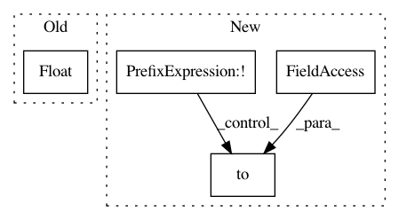

3bd4db86630b75bbbfb6c5c0a1a85603097bf9b2,torchaudio/transforms.py,Scale,__call__,#Scale#Any#,66
Before Change
if isinstance(tensor, (torch.LongTensor, torch.IntTensor)):
tensor = tensor.float()
return tensor / self.factor
def __repr__(self):
After Change
Tensor: Scaled by the scale factor. (default between -1.0 and 1.0)
if not tensor.is_floating_point():
tensor = tensor.to(torch.float32)
return tensor / self.factor
def __repr__(self):
In pattern: SUPERPATTERN
Frequency: 4
Non-data size: 4
Instances
Project Name: pytorch/audio
Commit Name: 3bd4db86630b75bbbfb6c5c0a1a85603097bf9b2
Time: 2019-01-04
Author: david@da3.net
File Name: torchaudio/transforms.py
Class Name: Scale
Method Name: __call__
Project Name: pytorch/fairseq
Commit Name: 5a2f76ede044b4904af9461e18253f2929cfc5a4
Time: 2019-10-23
Author: dnn@fb.com
File Name: fairseq/criterions/nat_loss.py
Class Name: LabelSmoothedDualImitationCriterion
Method Name: _compute_loss
Project Name: pytorch/audio
Commit Name: 3bd4db86630b75bbbfb6c5c0a1a85603097bf9b2
Time: 2019-01-04
Author: david@da3.net
File Name: torchaudio/transforms.py
Class Name: DownmixMono
Method Name: __call__